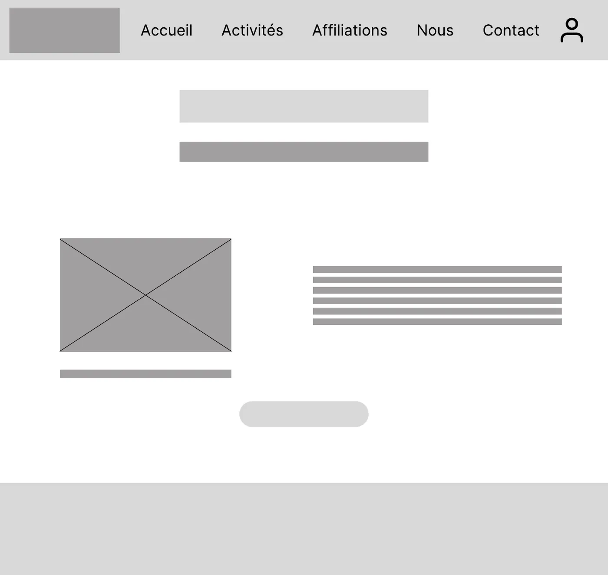
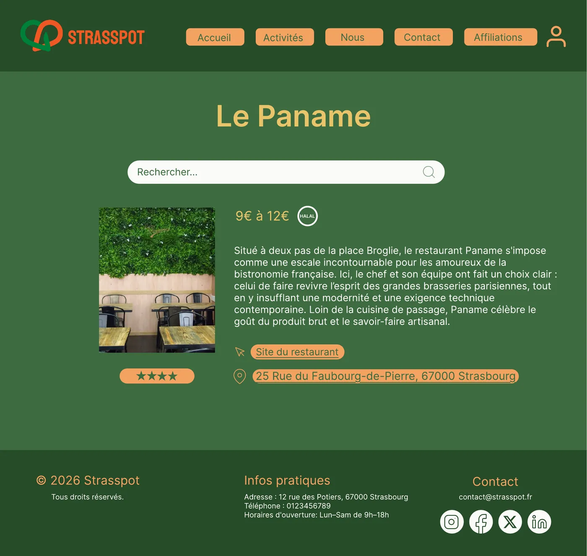
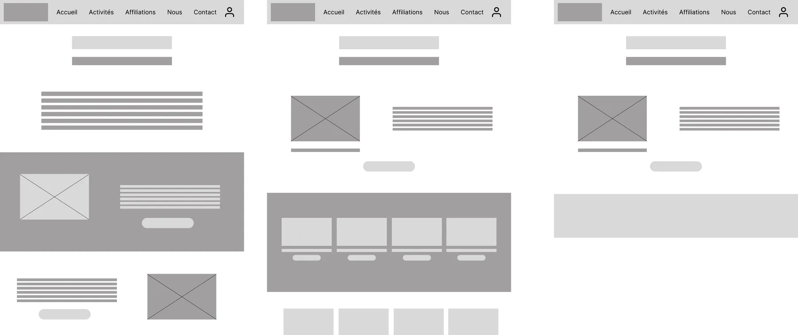
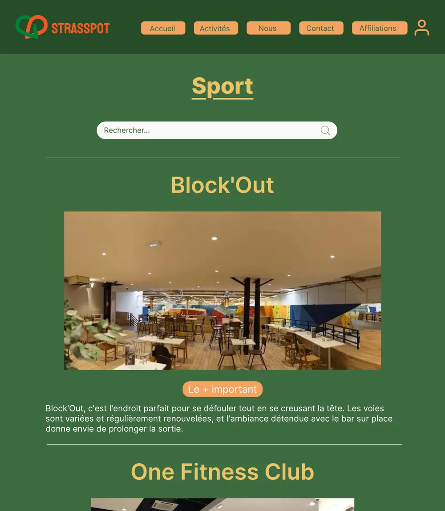
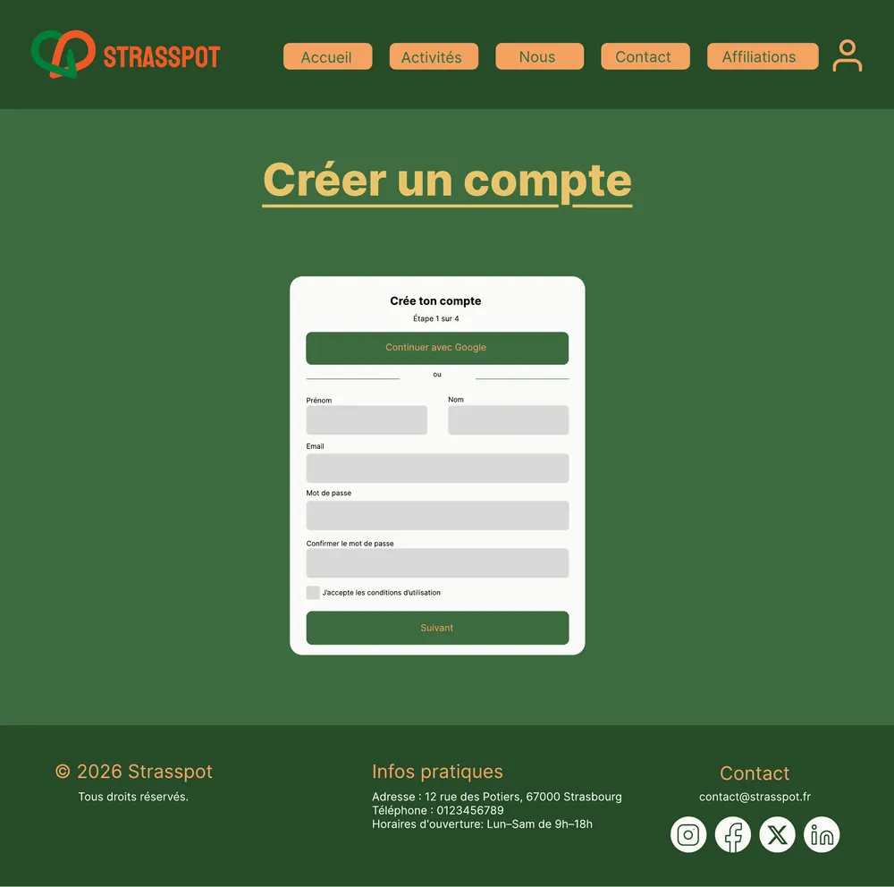

Strasspot
Un guide des bons plans à Strasbourg, pensé pour les étudiants et testé avec eux. Mon premier vrai projet d’UX, mené en équipe de A à Z : de la recherche aux tests.
- Mon rôle
- UX Designer
- Équipe
- 6 étudiants
- Date
- Mars 2026, SAÉ 201
- Outils
- Miro, Figma

Le problème
Beaucoup d’étudiants passent à côté de ce que Strasbourg propose. Ils ont peu de budget et ne savent pas où chercher. Notre sujet : concevoir un site qui réunit les bons plans de la ville (restaurants, bars, sport, culture) à des prix adaptés aux étudiants.
La consigne imposait une vraie démarche de recherche : étudier les sites existants, définir les cibles, créer des personas, construire l’architecture du site, puis la tester.
Mon rôle
J’étais UX Designer dans une équipe de 6. J’ai participé à toutes les étapes avec l’équipe : le cadrage, les cibles et les personas, le tri de cartes, les wireframes et les tests.
Pendant les tests, chacun avait une mission précise : accueillir les participants, prendre des notes, observer les émotions… La mienne était d’observer en silence, pour repérer les moments où les participants hésitaient.
Cadrer le projet
Nous avons d’abord étudié quatre sites proches de notre idée : MisterGoodBeer (les prix des bars), GetYourGuide (les activités par ville), Funbooker (la réservation d’activités) et Le Fooding (une sélection de restaurants). Aucun ne visait les étudiants, ni ne réunissait sorties, sport et culture au même endroit.
Nous avons ensuite fixé le périmètre : Strasbourg et ses alentours, des filtres par prix et par avis, une carte et un système de notes. Le paiement en ligne est resté en dehors du projet. Strasspot renvoie vers le site de chaque lieu.
Les utilisateurs
Au cœur de la cible : les étudiants de l’Université de Strasbourg. Autour d’eux, les 16-25 ans de la ville, puis les plus de 30 ans et les parents. Nous avons créé 5 proto-personas : des profils construits à partir de nos hypothèses, que les tests devaient ensuite confirmer ou corriger.
« Je veux profiter de Strasbourg sans me ruiner. »
« Je cherche des endroits sympas pour la pause de midi et des endroits pour pratiquer mon sport. »
« Je veux pouvoir continuer de sortir dans Strasbourg, mais j’ai déjà vu beaucoup de choses et j’ai du mal à trouver le meilleur. »
Les mêmes besoins revenaient : un budget limité, peu de temps pour chercher, et l’envie d’un site simple et rapide à consulter.
Le tri de cartes
Pour choisir les rubriques du site, nous avons demandé à plusieurs personnes de classer les mêmes cartes en groupes qui leur semblaient logiques. Comparez trois de leurs classements, et suivez la carte Cinéma :
Culture
- Musée et exposition
- Opéra et spectacle
- Théâtre
- Cinéma
Sorties musicales
- Boîte de nuit
- Concerts
Sorties nature
- Parcs
- Randonnée
Sport
- Associations sportives
- Sport d’extérieur
- Salle de sport
- Sport d’intérieur
Nourriture
- Restaurant
- Menu à moins de 10 €
- Fast food
- Bars
Le même cinéma finit dans « Culture », « Soirées » ou « Activité » selon la personne. Aucun classement n’était évident : c’est exactement ce que les tests allaient confirmer.
Wireframes et maquettes
Nous avons d’abord posé la structure en wireframes sur Figma : l’accueil, une page par catégorie, puis la fiche de chaque lieu. Chaque fiche réunit ce qu’il faut pour décider vite : le prix, les avis, le lien vers le site et l’adresse.



Les tests
Six étudiants ont testé notre prototype. Chacun recevait la même mission, sans aide :
« Ouvre la fiche du cinéma Vox, trouve son adresse sur Google Maps, puis crée-toi un compte. »
Le concept a été bien compris, et la plupart ont trouvé la création de compte grâce à l’icône en forme de personnage. Mais quatre problèmes sont revenus :
- Le cinéma n’était pas à sa placePlusieurs testeurs l’ont cherché dans « Culture ». Il était rangé dans « Divertissement ». Un participant a été surpris de ne pas le trouver en culture.
- Des boutons trop semblablesLes boutons des catégories se ressemblaient tous. Difficile de les distinguer d’un coup d’œil.
- Un lien Maps trop discretCertains cliquaient sur le site du lieu au lieu de l’adresse, puis cherchaient la carte.
- Deux façons de naviguerLes moins à l’aise passaient par le menu. Les autres faisaient défiler la page d’accueil.
Nos recommandations
La consigne ne demandait pas de modifier les maquettes. Il fallait analyser les retours et défendre les changements à l’oral, lors d’une soutenance au format réunion. Nous avons proposé de :
- renommer les catégories avec les mots des utilisateurs, et placer le cinéma dans « Culture » ;
- différencier visuellement les boutons des catégories ;
- rendre le lien vers l’adresse plus visible que le lien vers le site ;
- mieux guider l’utilisateur dès la page d’accueil, pour ceux qui défilent comme pour ceux qui utilisent le menu.


Ce que j’en retiens
J’ai compris que concevoir pour quelqu’un demande de mettre ses propres préférences de côté. Le classement qui nous semblait logique ne l’était pas pour les testeurs.
Ce que je ferais autrement
- Tester plus tôt et plus souvent : des retours tardifs obligent à refaire des wireframes.
- Vérifier le contraste des maquettes : certains petits textes jaunes et orange sur fond vert sont difficiles à lire.
Projet suivant